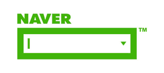

Naver
네이버(NAVER)는 대한민국 최대 포털 사이트다.
검색 엔진 등 포털 서비스를 중심으로 블로그, 카페, 포스트 등의 커뮤니티 서비스를 비롯하여
뉴스, 스포츠, 연예, 쇼핑 등 다양한 콘텐츠 주제판을 제공하고 있다. 라인이라는 자체적 메신저,
지식백과 서비스를 통해 검색 결과에서도 믿을 만한 정보를 쉽게 찾아볼 수 있도록 하고 있으며,
국어, 영어, 중국어, 일본어를 비롯한 33개의 어학사전을 제공하여 전문 DB를 구축하고 있다.
세계 대부분 국가의 검색 시장을 정복한 구글이 정복하지 못하고 여전히 토종 포털이 1위인 얼마 안 되는 나라 중 하나가 대한민국이다.
그 외엔 야후! 재팬(네이버-소프트뱅크 합작)이 버티는 일본, 중국의 바이두, 러시아의 얀덱스 정도가 예외이다.
그만큼 네이버가 대한민국 시장에 미치는 영향은 크다.

메인화면은 네이버 서비스 시작 이래 웹페이지 디자인 트렌드가 사실적인 묘사에서 심플하고 직관적인 묘사를 중시하는 방향으로 변화함에 따라, 화면 상단에 있는 일명 '초록창'이라 불리는 검색창과 실시간 검색어 서비스라는 큰 틀은 유지한 채 지속적으로 개편되어 왔다. 실시간 검색어 서비스의 경우 사회 이슈나 트렌드 파악에 많은 도움이 되었으나, 선거 등 각종 커다란 사회 및 정치적 이슈 등이 발생할 때마다 조작 등의 의혹이 불거져 온 탓에 2020년 4월 15일 21대 총선 투표 종료 이후 검색어 설정을 한 상태에서만 실시간 검색어가 표시되도록 정책이 바뀌었으나, 2021년 2월 25일부로 완전 폐지되었다. 현재 서비스 중인 항목은 아래와 같고 폐지한 것은 취소선 처리했다.